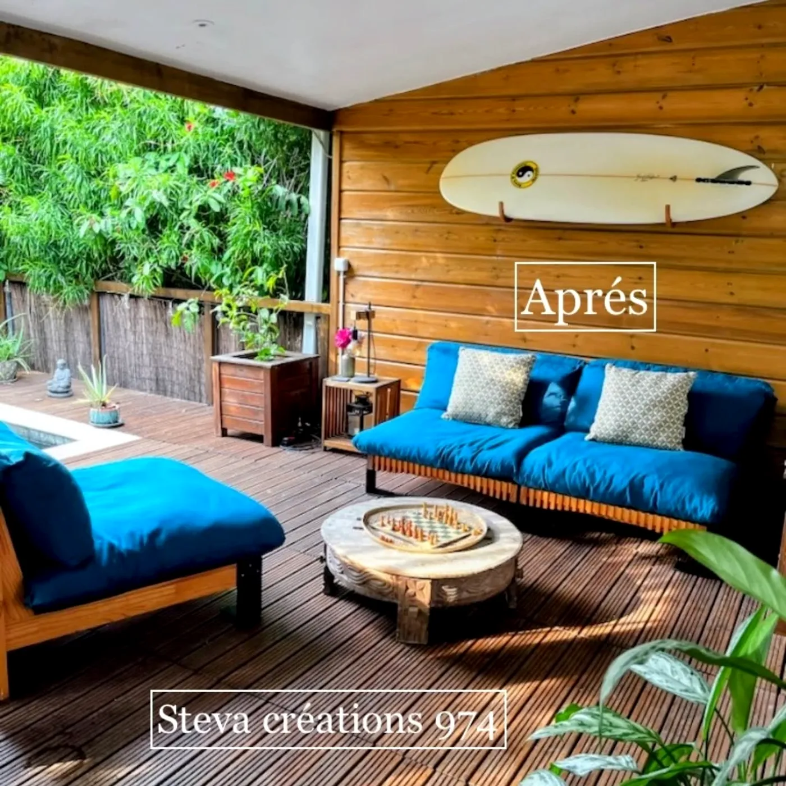
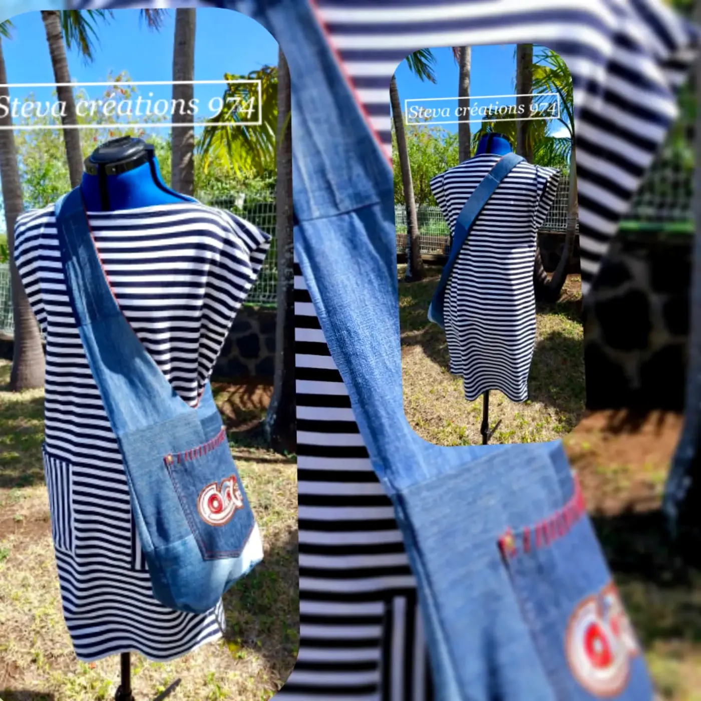
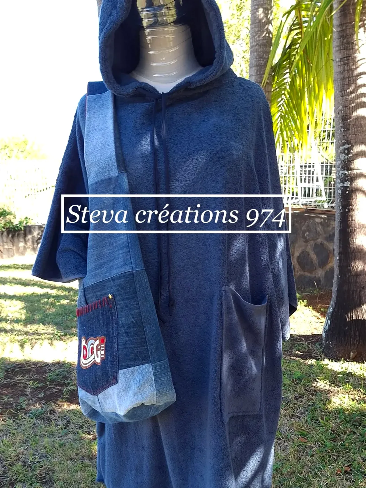
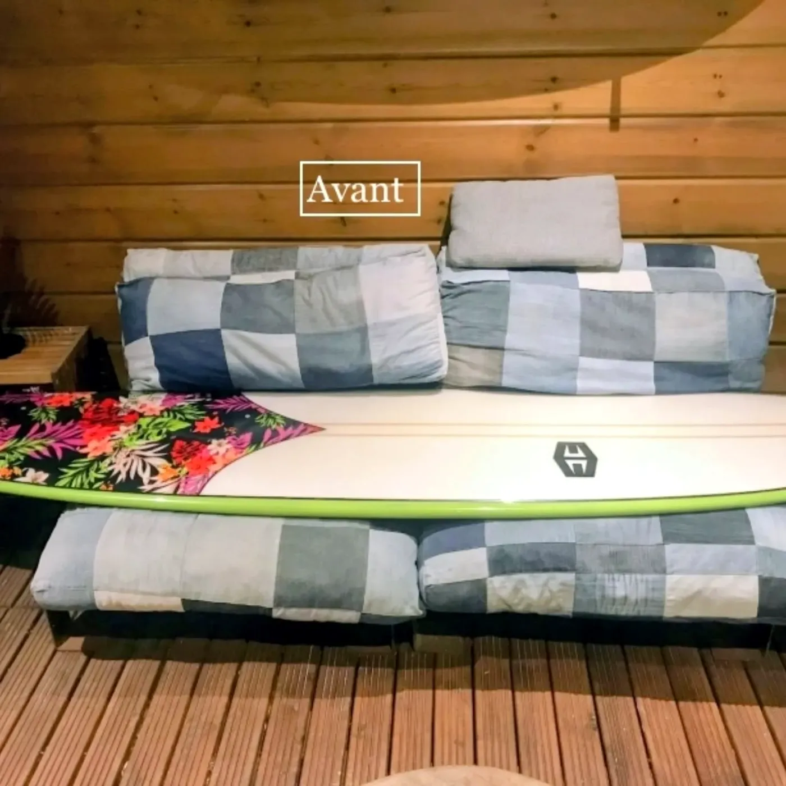
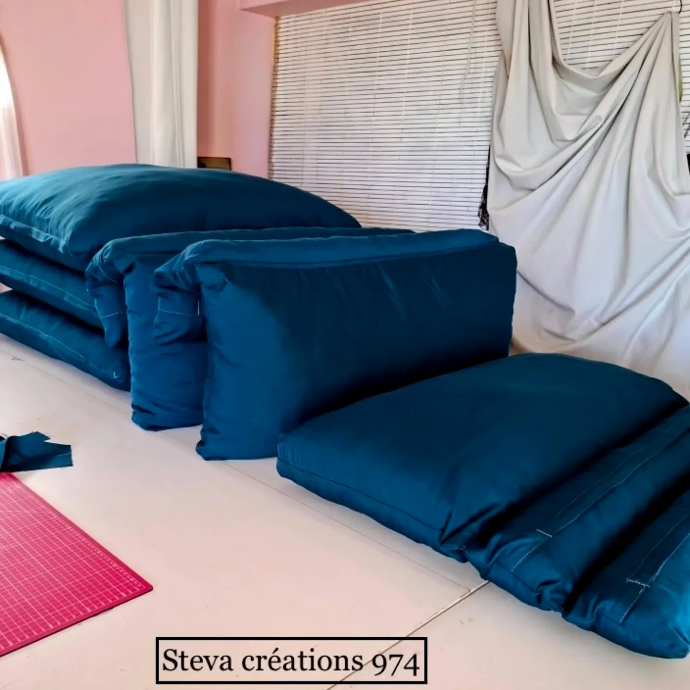

Des pièces cousues pour vous, à votre mesure : vêtements, sacs, retouches, coussins et housses pour la maison.
Une robe née de restes de jersey marine et blanc, assortie au sac créé juste avant. Un poncho et un sac imaginés pour un anniversaire. Chez Steva Créations, chaque commande devient une pièce unique, pensée avec vous.

Robes, ponchos, sacs : des pièces uniques, sur commande, pour vous ou pour offrir.
Ajuster, transformer, redonner vie à un vêtement que l’on aime.
Coussins, housses de canapé, linge de maison : la maison habillée à votre goût.



Steva Créations 974 · Les Avirons
Sur commande et rendez-vous